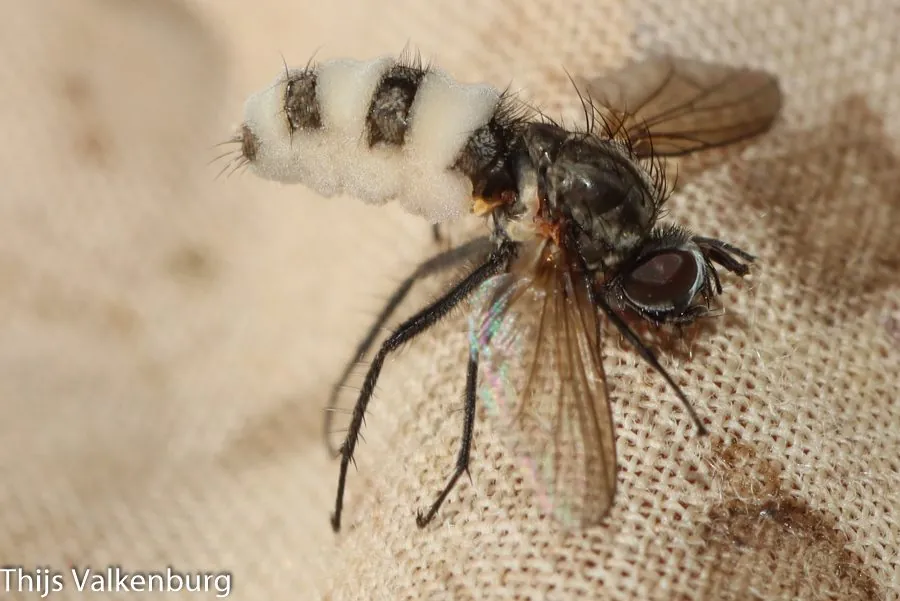

真菌 · 真菌界
虫霉 Entomophthora muscae

虫霉科昆虫病原真菌，专性侵染家蝇等蝇类，使蝇体膨大、翅展开并固定在物体上死亡，不感染人类。
- 分类
- 门虫霉门纲虫霉纲目虫霉目科虫霉科属虫霉属
- 栖息环境
- 蝇类体上，春秋季在畜舍、垃圾场等蝇群密集处流行
- 地理分布
- 世界性分布，中国各地均有记录
- 保护级别
- 暂无评估；随蝇类种群广泛分布
物种志
虫霉的菌体在蝇体内以菌丝段形式生长，感染后期虫体节间膨大、腹部呈淡黄白色环带，蝇的翅展开、足紧抓物体，固定在高处死亡。虫体表面随后长出白色至淡绿色的分生孢子梗与孢子，形成一圈“孢子晕”。孢子球形至椭圆形，可主动弹射。
虫霉是家蝇、丽蝇等蝇类的重要病原真菌，春秋季在蝇群中可引起流行病，使蝇数量骤降。被感染的蝇在死亡前会爬向高处、伸出翅足固定，这一行为改变有利于孢子扩散到下方的同类。它专性寄生于昆虫，不感染人，是蝇类生物防治的研究对象，但难以人工培养，尚未大规模应用。观察时不要用手直接接触死蝇，以免被其他病菌感染。
形态与习性
- 宿主家蝇、丽蝇等蝇类，专性寄生
- 感染表现虫体膨大、翅展开、固定高处死亡
- 孢子分生孢子球形，可主动弹射
- 生境畜舍、垃圾场等蝇群密集处
- 流行春秋季可引起蝇群流行病
- 安全性不感染人，勿徒手接触死蝇
趣味知识
- 被虫霉感染的苍蝇死前会爬上高处、展开翅膀、紧抓物体，姿态僵硬如标本。
- 这种“向上固定”的行为有利于孢子从高处落到下方经过的同类身上。
- 虫霉在春秋季能造成蝇群大规模死亡，是自然界控制蝇口密度的因素之一。
- 它只感染昆虫，不感染人，但死蝇身上可能带其他病原，不要徒手触碰。